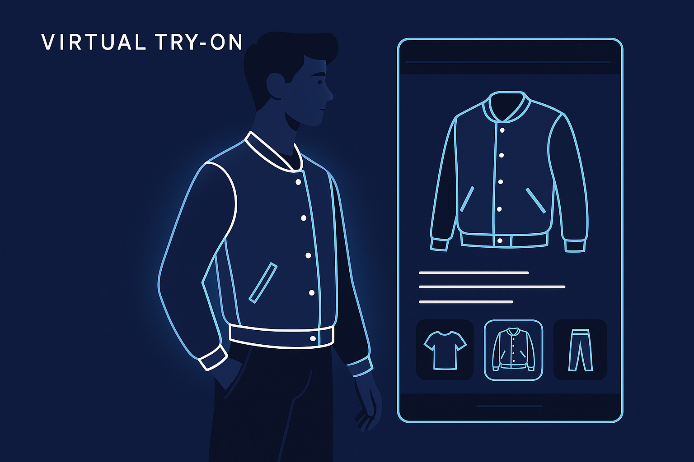

I use SQL, Python, Power BI, Tableau, and Excel to turn data into meaningful insights.
I'm a final-year CSE student and Data Analyst Intern passionate about solving problems with data.


I use SQL, Python, Power BI, Tableau, and Excel to turn data into meaningful insights.
I'm a final-year CSE student and Data Analyst Intern passionate about solving problems with data.
I'm a final-year Computer Science student from Hyderabad and a Data Analyst Intern at Hypweb Solutions LLP. I’m passionate about converting raw, unstructured data into insights that drive business decisions.
My work spans from building CNN models for medical imaging to designing Power BI dashboards and predicting customer churn with Python. I bring together technical skills in Python, SQL, Power BI, Tableau, Excel, and cloud technologies to solve real-world problems.
I’m always open to learning, collaborating, and contributing to projects that bridge data and decision-making. Let's build something impactful together!
Data Analyst Intern – Hypweb Solutions LLP (Remote)
Jan 2025 – Present
